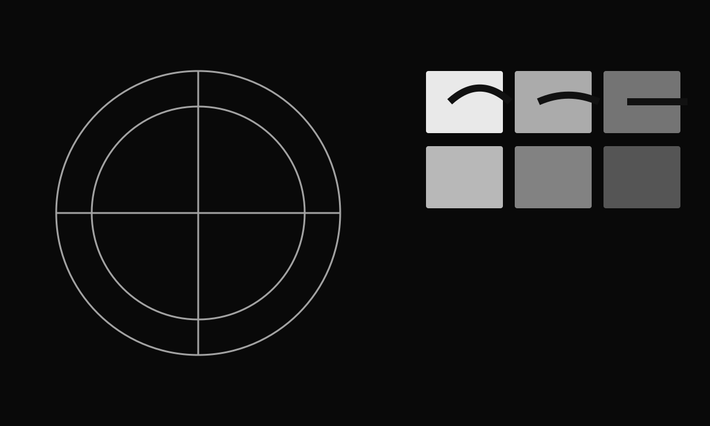
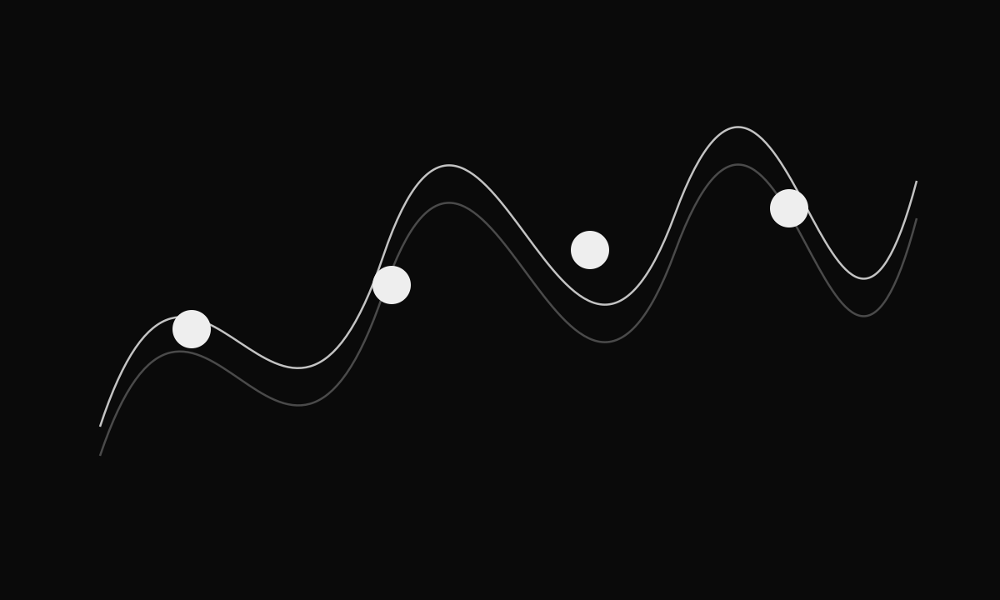
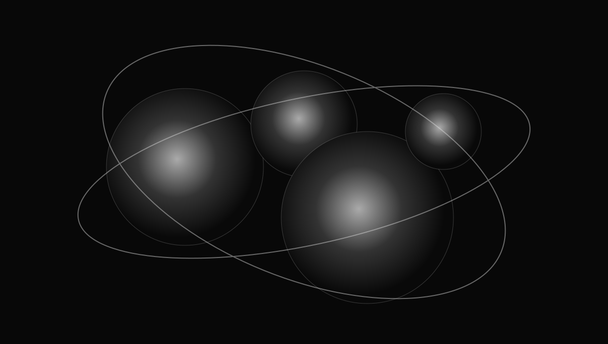

История анимации
Анимация — это не просто движение. Это способ рассказывать истории, который существует уже больше ста лет и постоянно развивается вместе с технологиями. В этой теме мы рассмотрим ключевые этапы становления анимации, узнаем, как она влияла на культуру и почему остаётся актуальной сегодня.
Первые шаги
История анимации начинается в конце XIX века, когда люди впервые задумались о том, как оживить статичные изображения. Простые оптические устройства создавали иллюзию движения, быстро сменяя кадры.
Такие эксперименты помогли сформулировать важную идею: движение можно конструировать из последовательности неподвижных состояний. Этот принцип остаётся основой и традиционной, и цифровой анимации.


Развитие в XX веке
С появлением кино анимация стала развиваться как самостоятельный язык. Возникли новые производственные процессы, способы работы с персонажами, монтажом, ритмом и звуком. Постепенно анимация стала не только развлечением, но и инструментом рекламы, образования, дизайна и визуальной коммуникации.
Хорошая анимация не просто показывает изменение положения объекта — она помогает зрителю почувствовать характер движения.
Для моушн-дизайнера важно смотреть на историю не как на набор дат, а как на коллекцию решений: почему движение выглядит убедительно, как автор управляет вниманием и какие ограничения технологии превращаются в выразительные приёмы.
Современная анимация
Сегодня анимация используется в кино, рекламе, интерфейсах, образовании и искусстве. 2D, 3D, процедурная графика, симуляции и интерактивные системы могут существовать внутри одного проекта.

Выводы
История анимации показывает, что инструменты постоянно меняются, а базовые задачи остаются: передать идею, построить ритм, направить внимание и сделать движение выразительным. Дальше на курсе эти принципы будут разбираться уже через конкретные техники и практику.